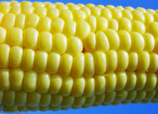

For years, the biotechnology industry has trumpeted that it will feed the world, promising that its genetically engineered crops will produce higher yields.
That promise has proven to be empty, according to a new report by the Union of Concerned Scientists (UCS). Despite 20 years of research and 13 years of commercialization, genetic engineering has failed to significantly increase U.S. crop yields.
“The biotech industry has spent billions on research and public relations hype, but genetically engineered food and feed crops haven’t enabled American farmers to grow significantly more crops per acre of land,” says Doug Gurian-Sherman, a biologist in the UCS Food and Environment Program and author of the report. “In comparison, traditional breeding continues to deliver better results.”
The report, Failure to Yield: Evaluating the Performance of Genetically Engineered Crops, is the first to closely evaluate the overall effect genetic engineering has had on crop yields in relation to other agricultural technologies. It reviewed two dozen academic studies of corn and soybeans, the two primary genetically engineered food and feed crops grown in the United States.
Based on those studies, the UCS report concluded that genetically engineering herbicide-tolerant soybeans and herbicide-tolerant corn has not increased yields. Insect-resistant corn, meanwhile, has improved yields only marginally. The increase in yields for both crops over the last 13 years, the report found, was largely due to traditional breeding or improvements in agricultural practices.
The UCS report comes at a time when food price spikes and localized shortages worldwide have prompted calls to boost agricultural productivity, or yield - the amount of a crop produced per unit of land over a specified amount of time.
Biotechnology companies maintain that genetic engineering is essential to meeting this goal. Monsanto, for example, is currently running an advertising campaign warning of an exploding world population and claiming that its “advanced seeds ... significantly increase crop yields.”
The UCS report debunks this claim, concluding that genetic engineering is unlikely to play a significant role in increasing food production in the foreseeable future.
The biotechnology industry has been promising better yields since the mid-1990s, but “Failure to Yield” documents that the industry has been carrying out gene field trials to increase yields for 20 years without significant results.
“After more than 3,000 field trials, only two types of engineered genes are in widespread use, and they haven’t helped raise the ceiling on potential yields,” says Margaret Mellon, a microbiologist and director of UCS’s Food and Environment Program. “This record does not inspire confidence in the future of the technology.”
“Failure to Yield” makes a critical distinction between potential - or intrinsic - yield and operational yield, concepts that are often conflated by the industry and misunderstood by others. Intrinsic yield refers to a crop’s ultimate production potential under the best possible conditions. Operational yield refers to production levels after losses due to pests, drought and other environmental factors.
The study reviewed the intrinsic and operational yield achievements of the three most common genetically altered food and feed crops in the United States: herbicide-tolerant soybeans, herbicide-tolerant corn and insect-resistant corn (known as Bt corn, after the bacterium Bacillus thuringiensis, whose genes enable the corn to resist several kinds of insects).
Herbicide-tolerant soybeans, herbicide-tolerant corn and Bt corn have failed to increase intrinsic yields, the report found. Herbicide-tolerant soybeans and herbicide-tolerant corn also have failed to increase operational yields, compared with conventional methods.
Meanwhile, the report found that Bt corn likely provides a marginal operational yield advantage of 3 to 4 percent over typical conventional practices. Since Bt corn became commercially available in 1996, its yield advantage averages out to a 0.2 to 0.3 percent yield increase per year. To put that figure in context, overall U.S. corn yields over the last several decades have annually averaged an increase of approximately 1 percent, which is considerably more than what Bt traits have provided.
In addition to evaluating genetic engineering’s record, “Failure to Yield” considers the technology’s potential role in increasing food production over the next few decades. The report does not discount the possibility of genetic engineering eventually contributing to increased crop yields. It does, however, suggest that it makes little sense to support genetic engineering at the expense of technologies that have proven to substantially increase yields, especially in many developing countries. In addition, recent studies have shown that organic and similar farming methods that minimize the use of pesticides and synthetic fertilizers can more than double crop yields at little cost to poor farmers in such developing regions as sub-Saharan Africa.
The report recommends that the U.S. Department of Agriculture, state agricultural agencies, and universities increase research and development for proven approaches to boost crop yields. Those approaches should include modern conventional plant breeding methods, sustainable and organic farming, and other sophisticated farming practices that do not require farmers to pay significant upfront costs. The report also recommends that U.S. food aid organizations make these more promising and affordable alternatives available to farmers in developing countries.
“If we are going to make headway in combating hunger due to overpopulation and climate change, we will need to increase crop yields,” Gurian-Sherman says. “Traditional breeding outperforms genetic engineering hands down.”
|
 MFRASCELLA/FLICKR Herbicide-tolerant corn and insect-resistant corn are two of the most common genetically altered food and feed crops in the United States. |
|
|